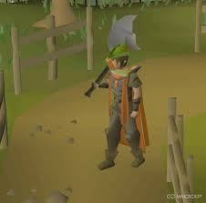
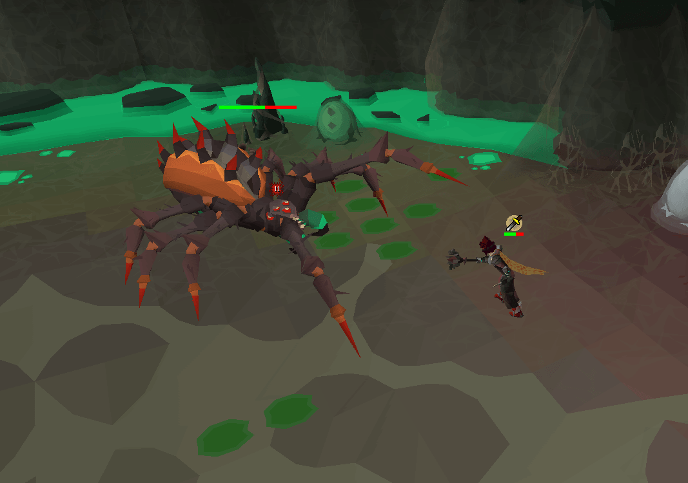
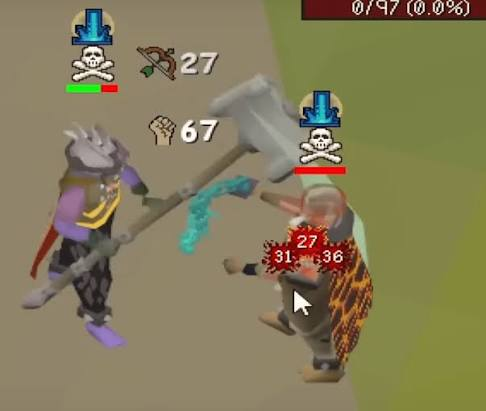

About Runescape101
A classic MMORPG built on freedom and long-term progression — skill up, fight bosses, battle other players, or quest through its lore. Simple to pick up, deep enough to keep you hooked for years..
A classic MMORPG built on freedom and long-term progression — skill up, fight bosses, battle other players, or quest through its lore. Simple to pick up, deep enough to keep you hooked for years..

Old School RuneScape is built around its skills, and there's something for every playstyle. Whether you're grinding out a gathering skill for quick levels, chasing that first 99, or working toward a big milestone cape, skilling is a slow but satisfying grind. Many players treat it as a relaxing break from combat — throw on a podcast, work on a skill, and watch the XP bar creep forward. Some skills reward consistency and daily habits, while others can be gold mines if you know the right methods. No matter your goal, skilling is the backbone of your account's progress.

From early bosses to high-level raids, OSRS PvM offers something for every skill level. Bossing rewards good gear, sharp mechanics knowledge, and a bit of patience for the inevitable dry streaks. Solo bosses test your ability to react and adapt, while group content brings a team-coordination challenge and some of the best loot in the game. Whether you're farming gold, chasing a rare pet, or hunting for that one special drop, PvM is where a lot of the game's endgame excitement lives.

PvP in OSRS lives mainly in a dangerous, high-risk zone, where risk and reward go hand in hand. Whether you're skulling for loot, dueling one-on-one, or diving into team-based minigames, PvP tests your gear setups, reaction time, and nerve. Flexible combat setups let players adapt on the fly, and the threat of losing your items adds real stakes to every fight. It's not for the faint of heart, but for players who love competition and tension, this side of the game offers some of the most thrilling moments OSRS has to offer.